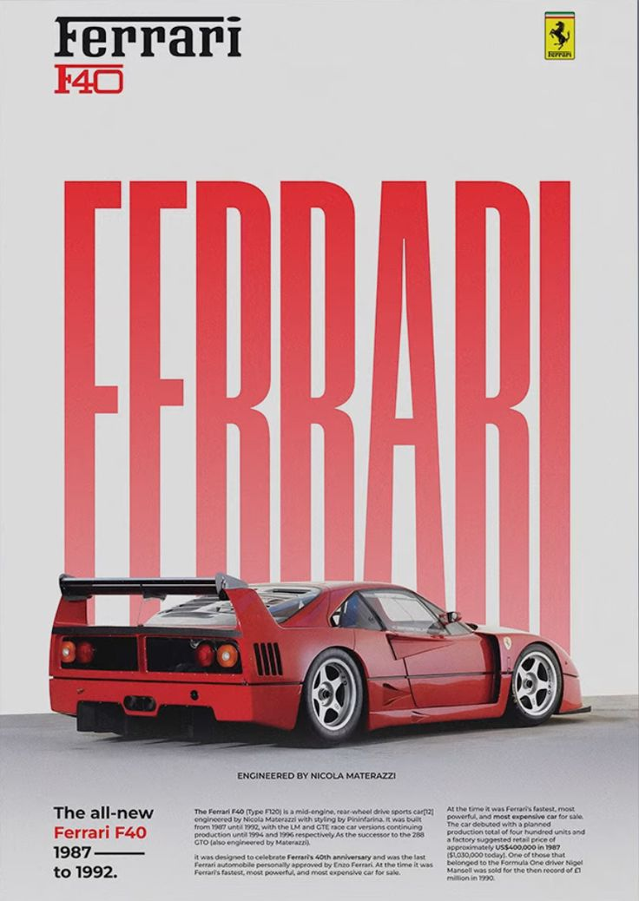
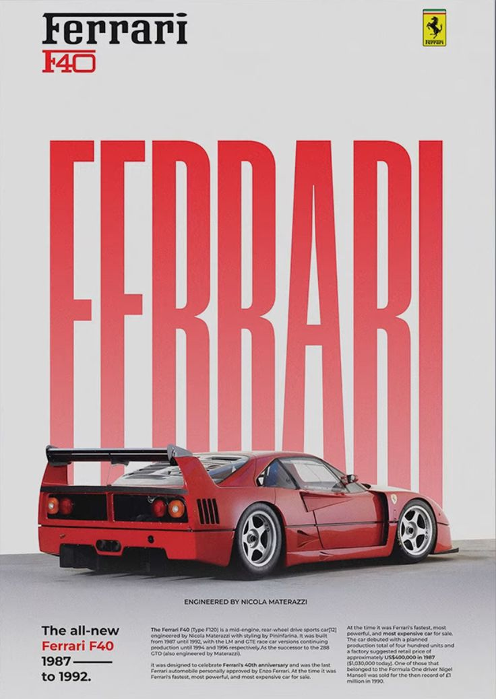

Ferrari represents the perfect blend of speed, style, and Italian craftsmanship. Every Ferrari is a statement of power and elegance, designed for those who live to drive. From the roaring engines to the sleek aerodynamic lines, each model embodies decades of racing heritage and innovation. Whether it’s the iconic 488, the powerful SF90, or the timeless Roma, Ferrari delivers an unmatched driving experience that stirs emotion and ignites passion. More than a car, Ferrari is a lifestyle — a celebration of excellence, precision, and pure adrenaline on every road.
Ferrari is more than an automobile — it’s the heartbeat of pure performance and passion. Crafted in Italy with unmatched precision, every Ferrari tells a story of heritage, innovation, and emotion. Behind the wheel, you don’t just drive — you connect with decades of racing excellence and engineering mastery. From the exhilarating sound of its V8 and V12 engines to the striking design that turns every head, Ferrari defines what it means to experience true driving perfection. For those who demand beauty, power, and prestige in one extraordinary machine, Ferrari remains the ultimate dream.
 
